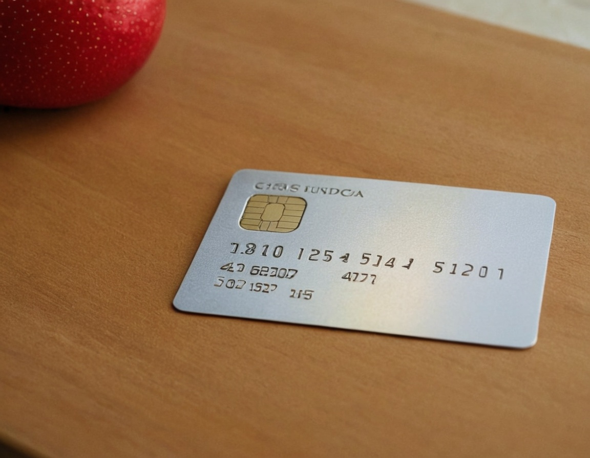
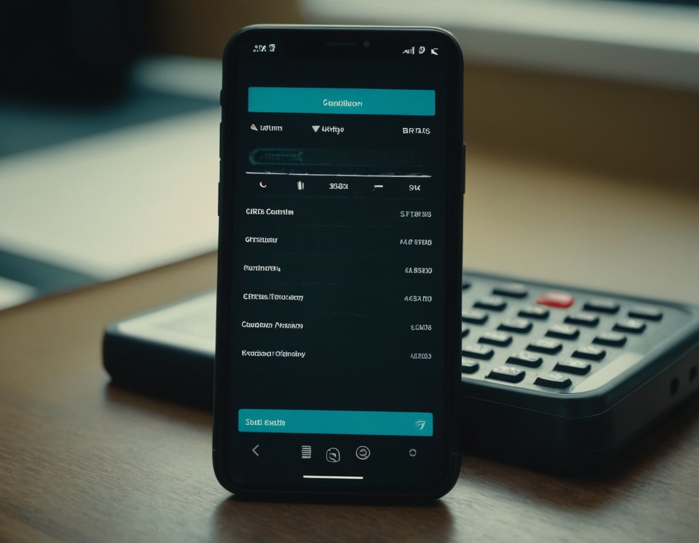

La Clave del Crédito Responsable
El manejo adecuado del crédito es un pilar fundamental en las finanzas personales. Aprender a utilizarlo de manera responsable puede ayudarte a alcanzar tus metas sin caer en problemas de endeudamiento. Tener control sobre tu crédito te permite mantener una vida financiera saludable y acceder a mejores oportunidades en el futuro. A continuación, te explicamos los aspectos clave del crédito responsable y cómo mejorar tu situación financiera.
¿Qué es el Crédito Responsable?
El crédito responsable implica utilizar productos financieros, como tarjetas de crédito y préstamos, de manera planificada y sostenible. Esto significa pagar a tiempo, mantener un equilibrio en el nivel de endeudamiento y evitar compras impulsivas que puedan afectar tu estabilidad económica.
Un uso adecuado del crédito también conlleva conocer las condiciones de cada producto financiero, como tasas de interés, comisiones y plazos de pago. La falta de información o una mala administración del crédito puede generar deudas difíciles de pagar, afectando la calidad de vida y limitando el acceso a futuras oportunidades financieras.
Beneficios de un Buen Manejo del Crédito
1. Mejor puntaje crediticio: Un uso adecuado del crédito te permite construir un historial financiero positivo, lo que facilita la aprobación de futuros préstamos o hipotecas.
2. Acceso a mejores tasas de interés: Un buen historial crediticio te permite obtener créditos con tasas de interés más bajas, lo que reduce el costo de financiamiento.
3. Mayor estabilidad financiera: Evitar el sobreendeudamiento te da tranquilidad y flexibilidad para enfrentar imprevistos económicos.
4. Capacidad de inversión y crecimiento: Un historial crediticio sólido te abre puertas para emprender negocios, invertir en propiedades o acceder a líneas de crédito con mayores beneficios.
5. Mayor seguridad en tus finanzas: Un manejo adecuado del crédito evita situaciones de estrés financiero y te permite contar con liquidez en momentos importantes.
6. Facilidad para acceder a financiamientos grandes: Si en el futuro deseas comprar una casa o un auto, contar con un historial crediticio positivo será clave para acceder a montos altos con condiciones favorables.
Consejos para un Uso Inteligente del Crédito
Para aprovechar los beneficios del crédito y evitar problemas financieros, es importante seguir una serie de buenas prácticas:
Errores Comunes en el Uso del Crédito
A pesar de la importancia del crédito en las finanzas personales, muchas personas cometen errores que pueden afectar su estabilidad financiera. Algunos de los más comunes son:
Conclusión
El crédito responsable es una herramienta poderosa dentro de las finanzas personales. Si se maneja correctamente, puede brindarte oportunidades financieras y estabilidad a largo plazo. La clave está en la planificación, la disciplina y la información adecuada. Conocer los términos y condiciones de cada producto financiero te permitirá tomar decisiones informadas y aprovechar al máximo los beneficios del crédito. Evitar errores comunes y aplicar buenas prácticas te ayudará a construir un futuro financiero sólido y sin preocupaciones.
Si quieres más consejos sobre crédito y finanzas personales, síguenos para obtener información actualizada y relevante. Tomar el control de tus finanzas hoy marcará la diferencia en tu bienestar económico a largo plazo.